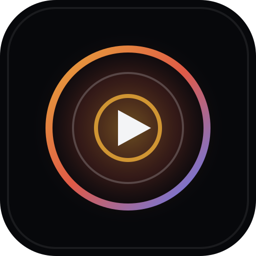

SONA
Audio Engine
Nocturne in Glass
Install
Add media
Aurora
Halo
Prism
Scope
Nebula
Nocturne in Glass
SONA Studio — Acoustic Optics
Aurora Fluid
Ambient Visualizer
Nocturne in Glass
SONA Studio
0:00
0:00
A-B Off
1.0x
Subs
PiP
Nocturne in Glass
SONA Studio
Stage
Library
Queue
Studio FX
Add Media
Local Files
Stream URL
Subtitles
Drop audio or video files, or click to browse
MP3, FLAC, WAV, OGG, M4A, MP4, WebM, MOV — saved locally offline
Import entire folder
Direct Audio or Video URL
Track Title (optional)
Media Format
Auto-detect from URL
Audio Stream
Video Stream
Add stream & play
Select .srt or .vtt subtitle file
Attaches synced captions onto the current media stage
No subtitle file loaded
Clear active subtitles
Drop media or subtitles into SONA
Audio, video, and .srt / .vtt files supported